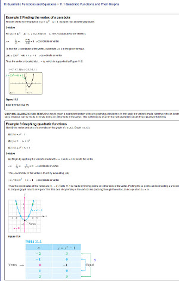
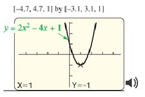
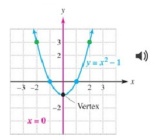

Sample 4: Quadratic Functions and Their Graphs

View a larger version of this image.
This is a page from a high school math textbook. It includes mathematical equations, graphs, and a table of mathematical data. (Click on the image for a larger version.)
Making This Image Accessible
This page can be made accessible using MathML, image descriptions, and sonification. The choice of modality varies depending on factors such as the information to be conveyed, grade level, student knowledge and experience, and the image itself. The complete HTML5 + MathML file and the MP3 audio files are available from the source files list.
How an image description is displayed depends on the reading tool being used. In most mainstream reading tools, the description will not be displayed at all, but in tools designed for accessibility (or mainstream tools with accessible features enabled), the description could be displayed below the image, voiced as part of the content, or both.
MathML
MathML is a way of marking up mathematical notation that makes both its structure and content accessible. It is used throughout the sample page above to create equations and other elements.For example, the code used to create this equation:

looks like:
<math overflow="scroll">
<mrow><mi>f</mi>
<mrow><mo>(</mo> <mi>x</mi> <mo>)</mo> </mrow><mo>=</mo>
<mn>2</mn> <msup><mi>x</mi> <mn>2</mn> </msup><mo>-</mo>
<mn>4</mn> <mi>x</mi> <mo>+</mo> <mn>1</mn>
</mrow></math>
The complete HTML5 + MathML code is available from the source files list.
Text or Audio Description
For the graphs on this page, the image descriptions are short enough that only alt text is needed. An appropriate description for the first graph is:
"A vertical parabola with the vertex at (1, -1)."
An appropriate description for the second graph is:
"A vertical parabola with the vertex at (0, -1). The parabola crosses the following points: (1, 0); (-1, 0); (2, 3); (-2, 3)."
EPUB 3
The code to create this description in EPUB 3 is:
<img id="math-img-1290" title="A graphing calculator of a graph titled
"[-4.7, 4.7, 1] by [-3.1, 3.1, 1]" with the parabola "y = 2x² - 4x + 1" with vertex
"X=1 Y=-1"." alt="A vertical parabola with the vertex at (1, -1)."
src="math_complete_files/p716_001.jpg">
DAISY
The code to create this description in DAISY is:
<imggroup><img id="math-img-1290" src="math_complete_files/p716_002.jpg"
alt="A vertical parabola with the vertex at (0, -1). The parabola crosses
the following points, (1, 0); (-1, 0); (2, 3); (-2, 3)." />
</imggroup>
Sonification
Sonification uses non-speech audio to represent the behavior of the graphed equation. By presenting mathematical concepts in a different way, sonification is useful for all students regardless of disability or learning differences. In a web browser or reading tool that supports audio, you can play the MP3 file by clicking on the icon next to the graph.

If your current reading system supports sound, you can hear the sonification for the graph above by clicking on the image.

If your current reading system supports sound, you can hear the sonification for the graph above by clicking on the image.
The complete example page with both sonification MP3 files is available from the source files list.